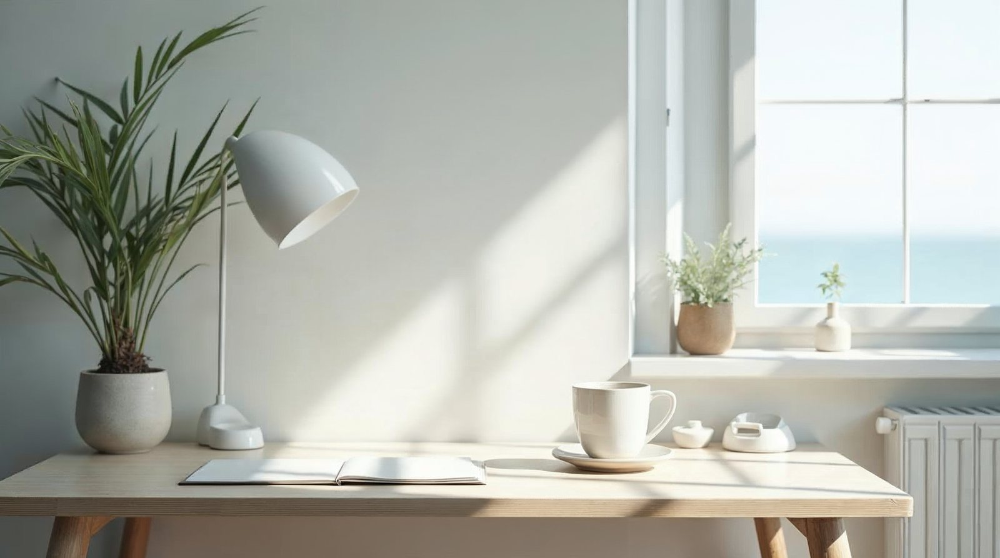
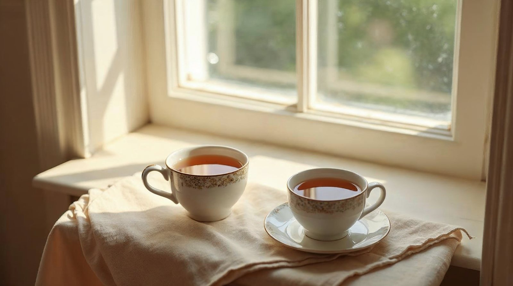
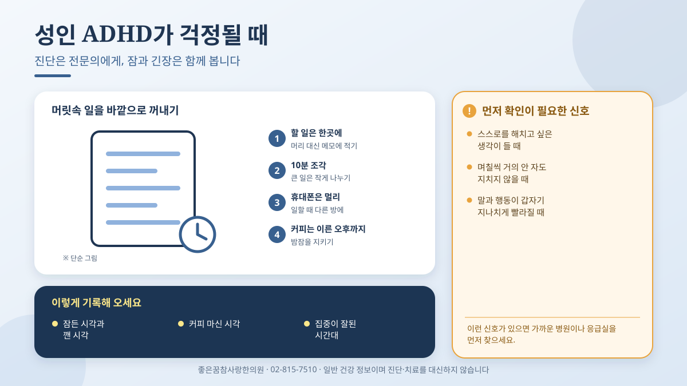

이종호 한의사 감수좋은꿈참사랑한의원 대표원장 (한의사 면허번호 19769)발행 2026-11-26 · 수정 2026-11-26
이 글의 차례
책상 위에 포스트잇이 겹겹이 붙어 있습니다. 오늘 해야 할 일을 적어 두었는데, 정작 한 일은 메일함을 여러 번 열었다 닫은 것뿐입니다. 저녁이 되어서야 마감이 내일이라는 걸 떠올리고, 결국 밤을 새워 겨우 마칩니다. 이런 날이 반복되면 문득 '혹시 나도 ADHD가 아닐까' 하는 생각이 듭니다.
요즘 진료실에서 이 질문을 꺼내시는 분이 부쩍 늘었습니다. 영상이나 글에서 성인 ADHD 이야기를 접하고, 체크리스트를 해 보니 많은 항목이 맞아떨어져서 걱정되셨다는 분이 많습니다. 그런 마음이 드는 것은 자연스러운 일이고, 스스로를 살펴보려는 좋은 출발이기도 합니다.
다만 집중이 흐트러지고 깜빡하는 일은 ADHD에서만 생기는 것이 아닙니다. 잠이 부족해도, 걱정이 많아도, 우울해도, 할 일이 감당할 수 없이 많아도 비슷한 모습이 나타납니다. 그래서 저는 먼저 이 어려움이 언제부터, 어떤 자리에서, 얼마나 오래 이어졌는지를 천천히 여쭙습니다.
이 글에서는 성인 ADHD가 걱정될 때 무엇을 먼저 나눠 보면 좋은지, 진단은 어디에서 받는지, 그리고 한의원에서는 잠과 긴장, 생활 리듬을 어떻게 함께 살피는지 차례로 말씀드리겠습니다.

성인 ADHD는 어떤 모습인가요?
ADHD는 주의력결핍 과잉행동장애를 줄인 말입니다. 어린 시절부터 이어진 집중의 어려움, 충동성, 쉽게 들뜨는 모습이 어른이 되어서도 일과 관계에 영향을 주는 상태를 말합니다. 어른이 되면 겉으로 뛰어다니는 모습은 줄어들고, 머릿속이 바쁜 모습으로 바뀌는 경우가 많습니다.
흔히 말씀하시는 모습은 이렇습니다. 시작이 어렵고 마감 직전에야 몰아서 하게 됩니다. 열쇠나 지갑, 휴대폰을 자주 두고 나옵니다. 대화 중에 다른 생각으로 새고, 끝까지 듣기 전에 말이 먼저 나갑니다. 재미있는 일에는 몇 시간씩 빠지지만 지루한 일은 몇 분도 버티기 어렵습니다.
중요한 점은 이런 모습이 어린 시절부터 있었는지, 그리고 집과 직장처럼 여러 자리에서 함께 나타나는지입니다. 최근 몇 달 사이에 갑자기 생긴 어려움이라면 ADHD보다 다른 이유를 먼저 살펴보는 경우가 많습니다.
왜 어른이 되어서야 알아차리게 될까요
어린 시절에는 부모님과 선생님이 일정과 숙제를 챙겨 주었습니다. 정해진 시간표와 바깥의 도움이 집중의 빈자리를 메워 준 셈입니다. 그런데 어른이 되면 일정도, 마감도, 집안일도 스스로 챙겨야 합니다. 바깥의 틀이 사라지면서 그동안 가려져 있던 어려움이 드러나는 경우가 많습니다.
또 하나는 할 일의 무게입니다. 직장 일, 집안일, 아이 돌봄, 부모님 걱정이 한꺼번에 겹치면 누구라도 주의가 흩어집니다. 원래 집중을 유지하는 데 힘이 더 드는 분이라면 이 시기에 버티던 힘이 바닥나면서 스스로 이상하다고 느끼게 됩니다.
잠과 긴장도 크게 작용합니다. 잠이 짧아지면 다음 날 주의력이 떨어지고, 마음이 늘 쫓기면 머릿속이 여러 갈래로 흩어집니다. 그래서 같은 사람도 잘 잔 주와 못 잔 주의 집중력이 눈에 띄게 다를 수 있습니다.
비슷해 보이지만 다른 이유들
집중이 안 되고 자꾸 깜빡할 때 함께 떠올려 볼 만한 이유가 몇 가지 있습니다. 하나만 있는 경우보다 두세 가지가 겹쳐 있는 경우가 더 흔합니다.
- 잠이 짧거나 자주 깨서 낮에 머리가 멍한 경우
- 걱정이 꼬리를 물어 한 가지 일에 머물기 어려운 경우
- 기분이 가라앉고 흥미가 떨어져 시작 자체가 힘든 경우
- 갑상선이나 빈혈처럼 몸의 피로를 키우는 상태가 있는 경우
- 갱년기 무렵 잠과 열감이 흔들리며 깜빡하는 일이 는 경우
- 일의 양이 감당할 수 없을 만큼 늘어난 경우
이 가운데 무엇이 중심인지에 따라 먼저 손볼 곳이 달라집니다. 그래서 체크리스트 점수 하나보다, 어려움이 시작된 시기와 그 무렵의 생활을 함께 듣는 것이 훨씬 도움이 됩니다.
진단은 어디에서 받나요?
성인 ADHD 진단은 정신건강의학과에서 면담과 설문, 필요한 검사를 거쳐 이루어집니다. 어린 시절 생활기록부나 성적표, 가족의 기억이 도움이 되기도 합니다. 진단을 받고 나면 약물 치료와 상담, 생활 전략을 함께 논의하게 됩니다.
진단을 받는 것이 두렵다는 분도 계십니다. 하지만 진단은 낙인이 아니라 지금의 어려움에 이름을 붙이고 맞는 도움을 찾는 과정입니다. 반대로 ADHD가 아니라는 이야기를 듣게 되더라도, 그 과정에서 잠이나 불안처럼 다른 실마리를 찾는 경우가 많습니다.
한의원에서는 진단을 내리지 않습니다. 대신 진단을 기다리는 동안이나 치료를 받는 중에도 이어지는 잠의 어려움, 몸의 긴장, 소화와 두근거림처럼 몸 쪽의 불편을 함께 살펴 드릴 수 있습니다.
집중을 흔드는 생활 속 요인
진료실에서 이야기를 나누다 보면 집중을 흔드는 생활 습관이 자주 보입니다. 늦은 밤까지 이어지는 화면 보기, 아침을 거르고 커피로 버티는 습관, 하루 종일 울리는 알림이 대표적입니다. 이런 습관은 원래 집중이 어려운 분에게 더 크게 작용합니다.
커피는 잠깐 머리를 맑게 해 주지만, 오후 늦게 마시면 밤잠을 얕게 만들고 다음 날 다시 커피를 찾게 합니다. 이 순환이 이어지면 낮에는 들뜨고 밤에는 잠들지 못하는 모습이 굳어지기 쉽습니다.
몸을 움직이는 시간이 줄어든 것도 영향을 줍니다. 하루 종일 앉아 있으면 몸은 처지는데 머리만 바쁘게 돌아갑니다. 짧게라도 걷는 시간을 넣으면 머릿속이 정리되는 느낌을 받는 분이 많습니다.
어린 시절 모습은 어떻게 떠올려 보나요?
어린 시절 이야기를 여쭈면 기억이 잘 나지 않는다는 분이 많습니다. 그럴 때는 생활기록부의 선생님 말씀, 숙제를 자주 빠뜨렸는지, 준비물을 잘 챙겼는지 같은 작은 장면을 떠올려 보시면 도움이 됩니다. 가족에게 물어보는 것도 좋은 방법입니다.
'수업 시간에 딴생각을 많이 했다', '책상이 늘 어지러웠다', '시험 전날 벼락치기만 했다'처럼 비슷한 이야기가 여러 개 겹친다면 정신건강의학과 상담 때 함께 말씀해 주세요. 반대로 어릴 때는 꼼꼼했는데 최근에만 달라졌다면 요즘의 잠과 마음 상태를 먼저 살펴보는 쪽이 맞을 수 있습니다.
잠과 집중은 어떻게 이어져 있나요?
잠은 하루 동안 들어온 정보를 정리하고 다음 날 쓸 주의력을 채우는 시간입니다. 잠이 한두 시간만 모자라도 다음 날 실수가 늘고, 말을 끝까지 듣기 어려워지며, 쉽게 짜증이 납니다. 집중이 어려운 분일수록 이 영향을 더 크게 받습니다.
그런데 집중이 어려운 분 가운데는 밤이 되어야 머리가 맑아지는 분이 많습니다. 낮에 못 한 일을 밤에 몰아서 하다 보면 잠드는 시각이 점점 늦어지고, 아침은 더 힘들어집니다. 그래서 진료실에서는 집중 이야기를 하다가도 자연스럽게 잠 이야기로 넘어가는 경우가 많습니다.

관계에서 생기는 오해
집중의 어려움은 일에서만 드러나지 않습니다. 약속 시간을 자주 놓치거나, 대화 중에 말을 끊거나, 부탁받은 일을 잊으면 상대는 무시당했다고 느끼기도 합니다. 본인은 그럴 뜻이 전혀 없었는데 관계가 서운해지는 일이 반복되면 마음도 함께 지칩니다.
이럴 때는 가까운 사람에게 내가 어떤 부분이 어려운지 미리 말해 두는 것이 도움이 됩니다. 중요한 약속은 바로 달력에 적고, 부탁받은 일은 그 자리에서 메모하는 습관만으로도 오해가 꽤 줄어듭니다.
먼저 이렇게 여쭙니다
처음 오시면 대략 이런 순서로 여쭙니다. 미리 떠올려 오시면 이야기가 수월해집니다.
- 집중이 어렵다고 느낀 것은 언제부터인가요? 어린 시절에도 비슷했나요?
- 집, 직장, 모임 가운데 어디에서 가장 힘드신가요?
- 잠드는 시각과 깨는 시각, 밤에 깨는 횟수는 어떠신가요?
- 커피나 에너지 음료는 하루에 얼마나, 몇 시까지 드시나요?
- 요즘 기분이 가라앉거나 걱정이 많아진 일이 있나요?
- 드시는 약이나 영양제, 진단받은 질환이 있나요?
모든 질문에 정확히 답하지 못하셔도 괜찮습니다. 생각나는 대로 말씀해 주시면, 이야기를 나누며 함께 정리해 갑니다.
일상에서 먼저 해 볼 수 있는 것
집중을 의지로만 붙잡으려 하면 쉽게 지칩니다. 머릿속에 담아 두는 일을 바깥으로 꺼내 두는 방식이 훨씬 오래갑니다.
- 할 일은 머리에 두지 말고 한곳에 적어 두기
- 큰 일은 10~15분 안에 끝낼 수 있는 조각으로 나누기
- 일할 때는 휴대폰을 다른 방이나 가방 안에 두기
- 열쇠, 지갑, 이어폰을 두는 자리를 하나로 정하기
- 커피는 오후 이른 시각까지만 마시기
- 잠드는 시각을 일주일 동안 같은 시각으로 맞춰 보기
처음부터 모두 하려 하지 마시고 하나만 골라 일주일 해 보세요. 작은 성공이 쌓이면 다음 것을 더하기가 한결 쉬워집니다.
스스로를 탓하는 마음도 내려놓으시면 좋겠습니다. 집중이 어려운 것은 게을러서가 아니라 머리가 일하는 방식이 조금 다른 것일 수 있습니다. 나에게 맞는 방법을 찾는 과정이라고 생각해 주세요.
직장에서 써 볼 수 있는 작은 장치
회의가 끝나면 바로 할 일 세 줄을 적어 두는 습관이 도움이 됩니다. 기억이 생생할 때 적어 두면 나중에 무엇을 해야 하는지 다시 떠올리느라 애쓰지 않아도 됩니다. 메일은 정해진 시각에 몰아서 확인하고, 그 밖의 시간에는 알림을 꺼 두시길 권합니다.
마감이 있는 일은 실제 마감보다 하루 앞선 날짜를 달력에 적어 두세요. 일을 끝낸 뒤 스스로에게 작은 쉼을 주는 것도 좋습니다. 잠깐 창밖을 보거나 물 한 잔을 마시는 정도로도 다음 일로 넘어가는 힘이 생깁니다.
한의원에서 함께 살필 수 있는 경우
- 머리는 바쁜데 잠은 늦게 들고 자주 깨는 경우
- 마감이 다가오면 가슴이 두근거리고 소화가 막히는 경우
- 어깨와 목이 늘 굳어 있고 머리가 무겁게 느껴지는 경우
- 커피 없이는 오전을 버티기 어렵고 오후에 기운이 뚝 떨어지는 경우
- 정신건강의학과 치료를 받으며 잠과 입맛이 흔들리는 경우
좋은꿈참사랑한의원에서는 맥을 짚고 잠, 소화, 대소변, 손발 온도를 여쭌 뒤 몸의 긴장이 어디에 몰려 있는지 직접 만져 봅니다. 진찰한 내용을 바탕으로 침, 온열 관리, 한약 상담 가운데 지금 상태에 맞는 것을 함께 정합니다.
한약을 상의할 때는 드시는 약을 모두 확인하고 신중하게 정합니다. 정신건강의학과 약은 처방한 선생님과 상의 없이 멈추지 않으시도록 안내하고, 한의원 진료는 그 치료와 나란히 가는 자리로 생각해 주시면 됩니다.
이렇게 기록해 오시면 상담이 쉬워집니다
2주 정도 간단히 적어 오시면 어느 날 집중이 잘되고 어느 날 흐트러지는지 흐름이 보입니다.
- 잠든 시각과 깬 시각, 밤에 깬 횟수
- 커피나 에너지 음료를 마신 시각과 양
- 집중이 잘된 시간대와 흐트러진 시간대
- 미루거나 깜빡한 일과 그날의 상황
- 두근거림, 두통, 소화 불편 같은 몸의 변화
기록은 잘하려고 애쓰지 않으셔도 됩니다. 빠진 날이 있어도 괜찮고, 한 줄씩만 적어도 충분합니다. 나란히 놓고 보면 잠과 집중의 연결이 생각보다 또렷하게 보이는 경우가 많습니다.
나에게 맞는 속도를 찾기 위해
성인 ADHD가 걱정된다는 것은 그만큼 지금 생활이 버겁다는 신호이기도 합니다. 진단 여부와 상관없이, 그 버거움을 덜어 줄 방법은 여러 갈래로 찾을 수 있습니다. 잠을 다듬는 일, 몸의 긴장을 푸는 일, 할 일을 바깥으로 꺼내 두는 일은 진단과 상관없이 오늘부터 시작할 수 있는 것들입니다. 혼자 애쓰기보다 함께 나눠 보시면 생각보다 길이 빨리 보입니다.
이번 주에는 잠드는 시각 하나, 또는 휴대폰을 멀리 두는 시간 하나만 정해 보세요. 다음에 오시면 기록을 함께 펼쳐 보며 그다음 걸음을 같이 정하겠습니다.
이런 증상은 먼저 확인이 필요합니다
- 스스로를 해치고 싶은 생각이 들거나 그런 방법을 떠올리게 되는 경우
- 며칠씩 거의 자지 않아도 지치지 않고 말과 행동이 갑자기 지나치게 빨라진 경우
이런 신호가 있으면 한의원보다 가까운 병원이나 응급실을 먼저 찾으세요.
마음이 많이 힘들 때는 자살예방상담전화 ☎ 109에서 언제든 이야기를 나눌 수 있습니다.
함께 읽으면 좋은 글
- 아이가 산만하고 집중을 못 해 ADHD가 걱정될 때, 부모는 무엇을 먼저 살피나요?
- 걱정이 꼬리를 물고 멈추지 않는 범불안(불안장애)은 어떻게 살피나요?
- 의욕이 없고 번아웃처럼 지칠 때는 한의원에서 무엇을 먼저 묻나요?
- 집중이 안 될 때 짧은 집중 구간과 백색소음은 어떻게 활용하나요?
- 수면 일기는 어떻게 쓰면 진료에 도움이 되나요?

여쭙는 것
- 집중이 어렵다고 느낀 것은 언제부터인가요? 어린 시절에도 비슷했나요?
- 집, 직장, 모임 가운데 어디에서 가장 힘드신가요?
- 잠드는 시각과 깨는 시각, 밤에 깨는 횟수는 어떠신가요?
생활에서 해 볼 것
- 할 일은 머리에 두지 말고 한곳에 적어 두기
- 큰 일은 10~15분 안에 끝낼 수 있는 조각으로 나누기
- 일할 때는 휴대폰을 다른 방이나 가방 안에 두기
한의원에서 함께 살필 것
- 머리는 바쁜데 잠은 늦게 들고 자주 깨는 경우
- 마감이 다가오면 가슴이 두근거리고 소화가 막히는 경우
- 어깨와 목이 늘 굳어 있고 머리가 무겁게 느껴지는 경우
먼저 확인이 필요한 신호
- 스스로를 해치고 싶은 생각이 들거나 그런 방법을 떠올리게 되는 경우
- 며칠씩 거의 자지 않아도 지치지 않고 말과 행동이 갑자기 지나치게 빨라진 경우
한눈에 보는 표
| 구분 | 핵심 |
|---|---|
| 여쭙는 것 | 집중이 어렵다고 느낀 것은 언제부터인가요? 어린 시절에도 비슷했나요? 집, 직장, 모임 가운데 어디에서 가장 힘드신가요? |
| 생활에서 해 볼 것 | 할 일은 머리에 두지 말고 한곳에 적어 두기 큰 일은 10~15분 안에 끝낼 수 있는 조각으로 나누기 |
| 한의원에서 함께 살필 것 | 머리는 바쁜데 잠은 늦게 들고 자주 깨는 경우 마감이 다가오면 가슴이 두근거리고 소화가 막히는 경우 |
| 먼저 확인이 필요한 신호 | 스스로를 해치고 싶은 생각이 들거나 그런 방법을 떠올리게 되는 경우 며칠씩 거의 자지 않아도 지치지 않고 말과 행동이 갑자기 지나치게 빨라진 경우 |
자주 묻는 질문
체크리스트에서 점수가 높게 나왔는데 ADHD인가요?
체크리스트는 참고일 뿐 진단은 아닙니다. 잠 부족, 불안, 우울로도 점수가 높게 나올 수 있어서, 진단은 정신건강의학과 면담과 검사를 거쳐 받으시길 권합니다.
한의원에서 ADHD 진단을 받을 수 있나요?
한의원에서는 진단을 내리지 않습니다. 진단은 정신건강의학과에서 받으시고, 한의원에서는 잠과 긴장, 소화처럼 몸 쪽의 불편을 함께 살펴 드립니다.
ADHD 약을 먹으면서 한의원 진료를 받아도 되나요?
드시는 약을 알려 주시면 그에 맞춰 진료 방향을 정합니다. 한약을 상의할 때는 드시는 약을 모두 확인하고 신중히 정하며, 처방받은 약은 상의 없이 멈추지 않습니다.
커피를 마시면 오히려 집중이 잘되는데 계속 마셔도 되나요?
오전에 적당히 드시는 것은 괜찮을 수 있지만, 오후 늦게 드시면 밤잠이 얕아져 다음 날 집중이 더 흐트러질 수 있습니다. 마시는 시각을 이른 오후까지로 당겨 보세요.
무엇부터 기록하면 좋을까요?
잠든 시각과 깬 시각, 커피 마신 시각, 집중이 잘된 시간대 세 가지만 적어도 충분합니다. 2주 정도 모이면 흐름이 보이기 시작합니다.
좋은꿈참사랑한의원은 재진 때 지난번 이야기부터 이어서 여쭙니다. 진료시간과 예약은 오시는 길에서 확인하세요.
어디서 상담받을 수 있나요?
좋은꿈참사랑한의원은 서울 동작구 만양로2길 2 신성빌딩 3층·5층(서울 동작구 상도동, 7호선 상도역 3번 출구 근처)에 있습니다. 한의사 3명(이종호 대표원장, 조영기 수석진료원장, 정원영 진료원장)이 진료합니다. 진료시간은 평일 09:30~20:00(점심 13:00~14:00), 토·일·공휴일 09:30~15:00이며, 방문 전 전화로 확인을 권합니다. 예약은 네이버 예약, 카카오톡 상담, 전화 02-815-7510로 받습니다.
이 글은 일반적인 건강 정보이며 개인의 진단이나 치료를 대신하지 않습니다. 증상이 있거나 복용 중인 약이 있다면 진료를 통해 확인하세요. 치료 효과는 개인마다 다를 수 있습니다.
작성 기준: 일반적으로 알려져 있는 건강 정보를 참고해 정리했습니다(대표원장 감수). 증상 기록은 1~2주 동안 하루 1회, 비슷한 시간에 적어 오시면 지난 상태와 비교하기 쉽습니다.